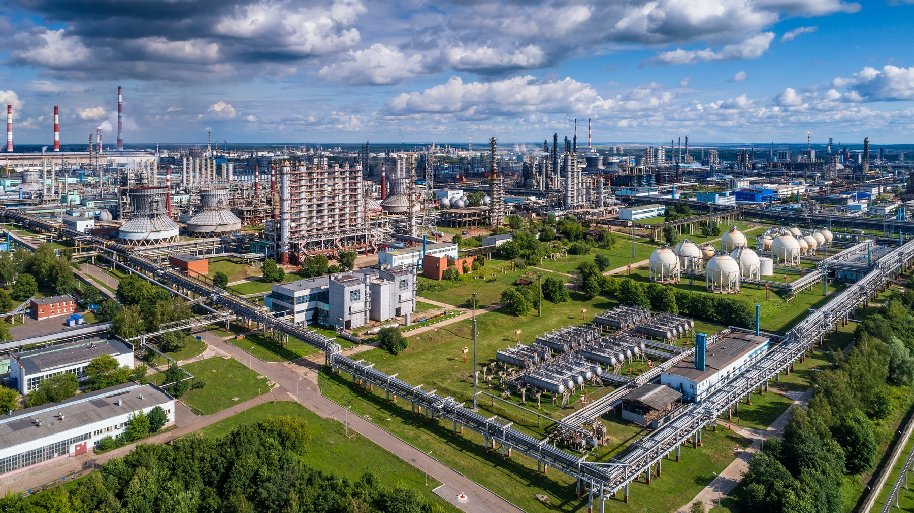

Дорога к знаниям:
60 лет образования Нижнекамска

Образование — это не просто школьные уроки и дипломы. Это фундамент, на котором строится жизнь целого города. Нижнекамск — уникальный пример: его история началась не с завода и даже не с жилого дома, а со школы. В 1961 году в двух бараках посёлка строителей прозвенел первый звонок, а через год открылось первое каменное здание — школа №1.

Этот сайт — путеводитель по шести десятилетиям развития образования в Нижнекамске. Вы узнаете, как строились школы вместе с городом, почему Нижнекамский политехнический колледж носит имя Евгения Королёва, с какими проблемами сталкиваются учителя сегодня и как образование влияет на экономику и социальную жизнь.
Ключевые цифры:
| 1961 г | открыта первая школа |
| 1962 г. | первая школа в капитальном здании |
| 1966 г. | открыт Нижнекамский энергостроительный техникум (ныне НПК им. Королёва) |
| 2026 г. | более 34 000 учеников в школах города и района |
| >60 | вакансий учителей на 2025 год — главный вызов сегодня |
- © chel
- Сделал: Каррамов Ильяс